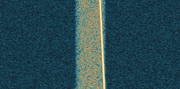

EETHERGLASS
RF SIGNAL OBSERVATORY / 01OBSERVE. HYPOTHESIZE. VERIFY.The structure
The structure
beneath the
interference.
Inspect a recording.
Measure what survives.

ACTUAL REFERENCE CAPTURE · QPSK + CHIRP